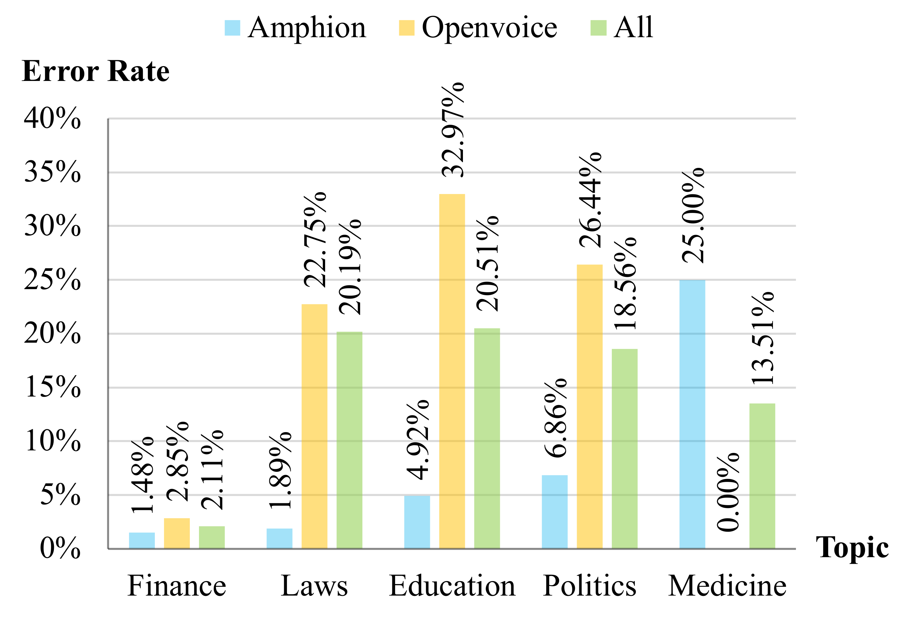

SPMIS: An Investigation of Synthetic Spoken Misinformation Detection
Abstract
In recent years, speech generation technology has advanced rapidly, fueled by generative models and large-scale training tech- niques. While these developments have enabled the production of high-quality synthetic speech, they have also raised concerns about the misuse of this technology, particularly for generating synthetic misinformation. Current research primarily focuses on distinguish- ing machine-generated speech from human-produced speech, but the more urgent challenge is detecting misinformation within spo- ken content. This task requires a thorough analysis of factors such as speaker identity, topic, and synthesis. To address this need, we conduct an initial investigation into synthetic spoken misinforma- tion detection by introducing an open-source dataset, SpMis. SpMis includes speech synthesized from over 1,000 speakers across five common topics, utilizing state-of-the-art text-to-speech systems. Although our results show promising detection capabilities, they also reveal substantial challenges for practical implementation, un- derscoring the importance of ongoing research in this critical area.
Example
A comparison between DeepFake detection and synthetic spoken misinformation detection. DeepFake detection (left) is to distinguish synthetic and recording. On the other hand, synthetic spoken misinformation detection (right) is to detect synthetic speech by a specific speaker or a group of speaker on specific topics.
Data Distribution
| Topic | # Samples | # Misinformation | # Speakers | Duration (hr) |
|---|---|---|---|---|
| Politics | 76,542 | 1,740 | 772 | 586.59 |
| Medicine | 21,836 | 740 | 1,094 | 429.77 |
| Education | 177,392 | 2,970 | 989 | 665.59 |
| Laws | 11,422 | 862 | 936 | 1,534.78 |
| Finance | 53,011 | 2,369 | 940 | 585.69 |
| Other | 20,408 | 0 | 1,094 | 1,136.23 |
| ALL | 360,611 | 8,681 | 1,094 | 4,938.65 |
Pipeline

Overview of the detection pipeline. Deepfake Detection checks the synthetic audio and sends it to Speaker Verification. Speaker Verification verifies the celebrities we focus on and sends them to Topic Classification. Topic Classification tells the specific topic. Misinformation is detected through these three modules.
Results
The speaker error rate of two TTS models in Speaker Verification.
Error Rates of Speaker Verification Module
| Ref. Length | Finance(%) | Laws(%) | Education(%) | Politics(%) | Medicine(%) | Micro Averaged(%) |
|---|---|---|---|---|---|---|
| 10 seconds | 14.82 | 28.07 | 31.18 | 32.24 | 33.11 | 26.78 |
| 1 minute | 11.90 | 24.36 | 27.98 | 24.54 | 15.95 | 21.52 |
| 5 minutes | 3.84 | 20.19 | 21.82 | 18.16 | 13.78 | 15.33 |
| 20 minutes | 2.11 | 20.19 | 20.51 | 18.56 | 13.51 | 14.47 |
Error Rates of Topic Classification Module
| Model | Train Size | Finance(%) | Laws(%) | Education(%) | Politics(%) | Medicine(%) | Micro Averaged(%) |
|---|---|---|---|---|---|---|---|
| BERT | 1,000 | 0.04 | 0.00 | 0.92 | 0.92 | 0.16 | 0.50 |
| BERT | 3,000 | 0.04 | 0.00 | 1.13 | 0.07 | 0.16 | 0.40 |
| BERT | 10,000 | 0.00 | 0.00 | 0.67 | 0.35 | 0.00 | 0.28 |
| Logistic Regression | 1,000 | 0.00 | 0.00 | 4.06 | 0.65 | 1.10 | 1.56 |
| Logistic Regression | 3,000 | 0.04 | 0.00 | 1.87 | 0.22 | 0.16 | 0.67 |
| Logistic Regression | 10,000 | 0.09 | 0.00 | 1.75 | 0.29 | 0.16 | 0.66 |
Misinformation Detection Result
| Topic | Misinformation | Num. of Errors | Error Rate(%) |
|---|---|---|---|
| Politics | 1,740 | 333 | 19.14 |
| Medicine | 740 | 102 | 13.78 |
| Education | 2,970 | 556 | 18.72 |
| Laws | 862 | 175 | 20.30 |
| Finance | 2,369 | 57 | 2.41 |
| ALL | 8,681 | 1,223 | 14.09 |
BibTeX
@article{liu2024spmis,
title={SPMIS: An Investigation of Synthetic Spoken Misinformation Detection},
author={Peizhuo Liu and Li Wang and Renqiang He and Haorui He and Lei Wang and Huadi Zheng and Jie Shi and Tong Xiao and Zhizheng Wu},
journal={arXiv preprint arXiv:xxxx.xxxxx},
year={2024}
}
© 2024 AI Demo. This work is licensed under a Creative Commons Attribution-NonCommercial 4.0 International License.